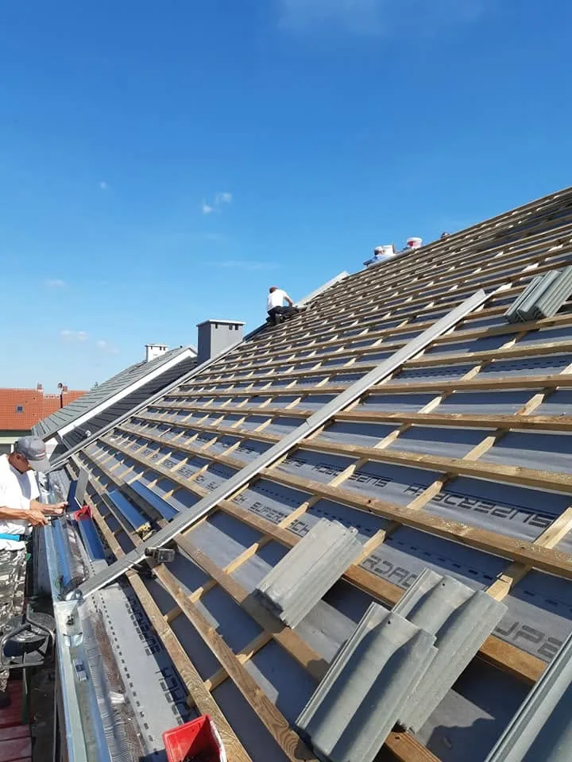

Pokrycia dachowe, więźby i naprawy w Dubinie i okolicy. Do tego własny podnośnik koszowy 20 m do prac, na które drabina nie sięga.
Dach, więźba, obróbki blacharskie i remont domu, wszystko ogarniamy sami, bez podwykonawców i przerzucania odpowiedzialności.
20 metrów zasięgu bez stawiania rusztowania. Przycinka drzew, mycie elewacji czy naprawa komina, wjeżdżamy i od razu zaczynamy pracę.
Cena ustalona przed robotą zostaje po robocie. Bez naciągania na prace, które nie są potrzebne.
Montaż i wymiana pokryć: dachówka ceramiczna, blachodachówka, dopasowane do konstrukcji dachu.
Konstrukcje dachowe od podstaw, łacenie, deskowanie i montaż membran dachowych.
Usuwamy przecieki i wymieniamy uszkodzone elementy pokrycia, także w trybie awaryjnym.
Montaż i wymiana rynien oraz obróbek blacharskich przy kominach i oknach połaciowych.
Przycinka drzew, mycie elewacji i prace wysokościowe bez stawiania rusztowania.
Kompleksowe prace budowlano-remontowe, wewnątrz i na zewnątrz budynku.
Podnośnik koszowy jest częścią naszego wyposażenia i wyjeżdża z nami na zlecenia wymagające dostępu na wysokość do 20 metrów, bez stawiania rusztowania.
Zadzwoń i opowiedz, co dzieje się z dachem albo jaki teren wymaga podnośnika. Ustalimy termin oględzin i powiemy uczciwie, ile będzie kosztować robota.